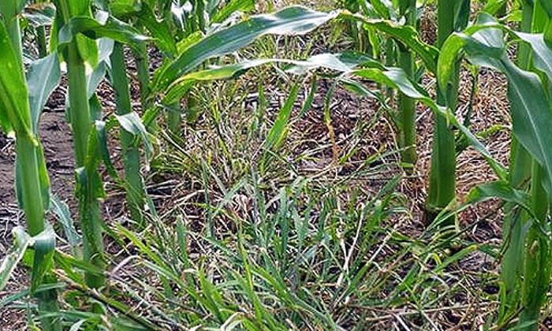
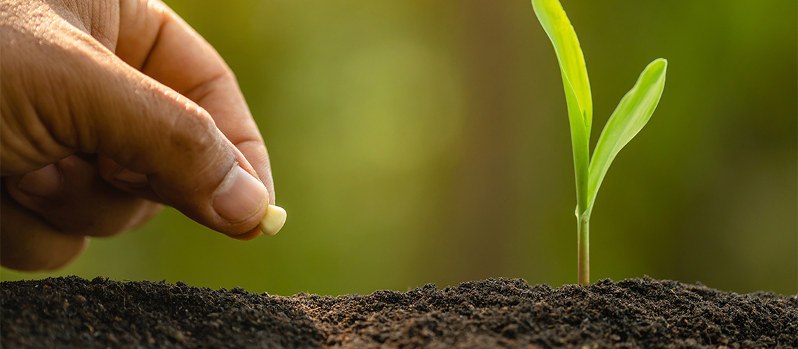
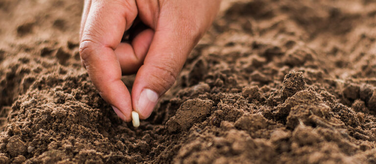

Recomendaciones para el cultivo de Maíz, el secreto para mejorar tu cosecha
Si quieres más grano con el mismo trabajo, estás en el lugar correcto. Te mostramos cómo manejar la tierra, la siembra y la nutrición del maíz de la forma más eficiente. Con estos datos, tu producción va a superar tus expectativas.
ExplorarFertilización
Terrenos planos mecanizados
En los terrenos planos mecanizados, la fertilización debe basarse en un análisis de suelos. El fósforo y el potasio se aplican al voleo antes de la última rastrillada, mientras que el nitrógeno se distribuye en dos momentos: un tercio al momento de la siembra, en banda lateral a 10 cm del surco, y el resto 25 días después, aplicado manualmente a 10 cm de la base de las plantas.
Terrenos de ladera:
En terrenos de ladera, el fósforo y el potasio se aplican al momento de la siembra, colocando el fertilizante en pequeños huecos o en corona a 10 cm del sitio de siembra. El nitrógeno se aplica en dos etapas: una tercera parte durante la siembra y el resto 30 días después. En zonas con alta precipitación, se recomienda usar Nitrón 26 como fuente de nitrógeno.

Control de Maleza
Terrenos planos mecanizados:
Las malezas se controlan mediante métodos mecánicos y/o químicos complementados con prácticas culturales. Si el control mecánico se realiza a tiempo, bastan dos cultivadas. El uso de herbicidas depende del tipo de maleza, el costo, la forma de aplicación y la eficacia de los métodos disponibles.
Terrenos de ladera:
El maíz debe mantenerse libre de malezas, especialmente durante los primeros 45 días, mediante control manual con machete o herbicidas recomendados por un ingeniero agrónomo. Se debe evitar el uso del azadón para prevenir la erosión del suelo.

Siembra
Es aconsejable sembrar procurando que los períodos de germinación y floración coincidan con los de mayor precipitación y la recolección no se presente en época de lluvias.
En los valles interandinos las mejores fechas de siembra corresponden a marzo y septiembre y en la región andina, marzo - abril y septiembre - octubre..

Distancia, Densidad y Profundidad de Siembra
Terrenos planos mecanizados:
El maíz se siembra a chorrillo con surcos de 90 a 100 cm, dejando 4 o 5 plantas por metro después del raleo, lo que permite obtener unas 50.000 plantas por hectárea con 20 kg de semilla. La profundidad ideal de siembra es de 5 cmTerrenos de ladera:
Los surcos se hacen a nivel o en curvas de contorno, separados 90 cm, colocando 3 semillas cada 45 cm para dejar 2 plantas por sitio tras el raleo. Se obtienen unas 49.000 plantas por hectárea usando 15 kg de semilla, con una profundidad de siembra de 5 cm y raleo a los 15 días de la germinación.Fuentes
Aliados informativos oficiales
EOS Data Analytics